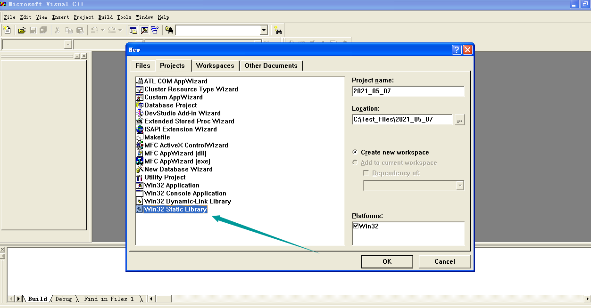
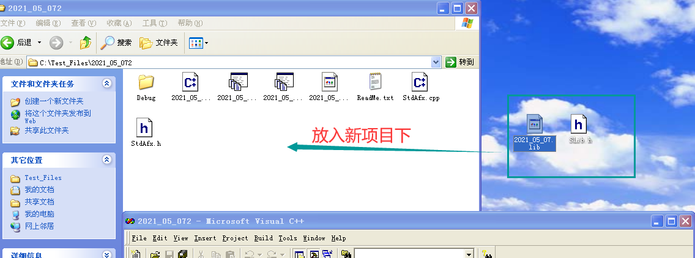
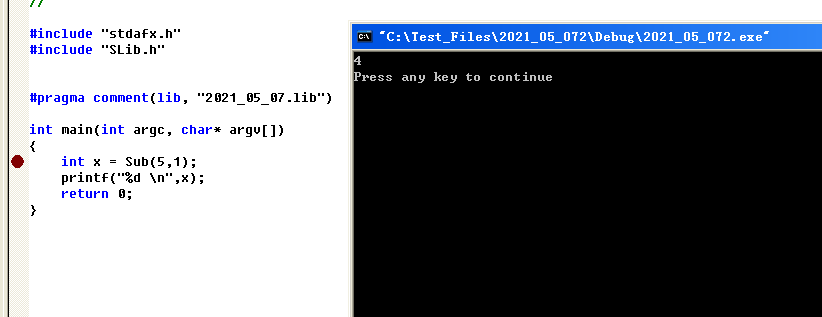
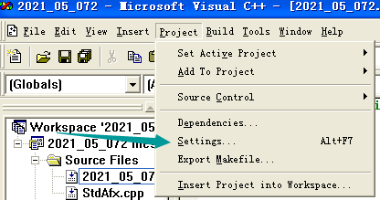
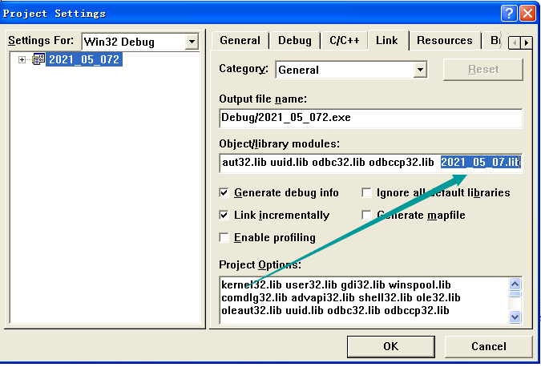
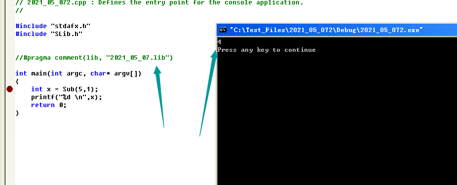
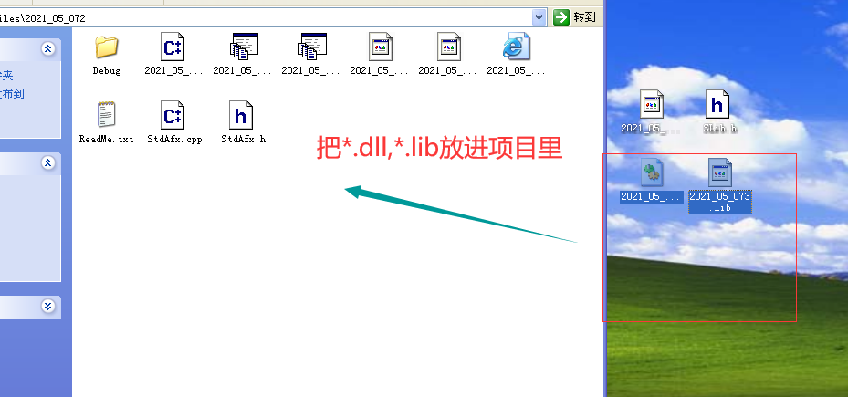
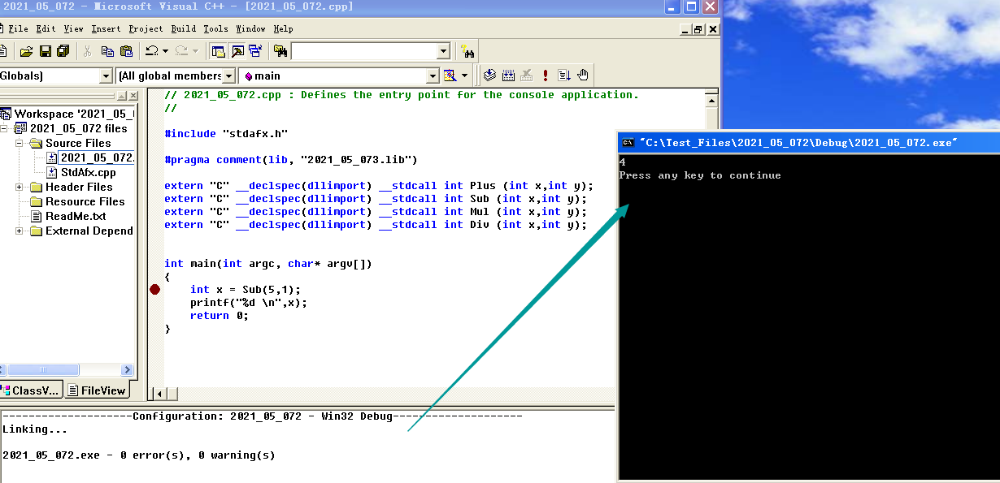
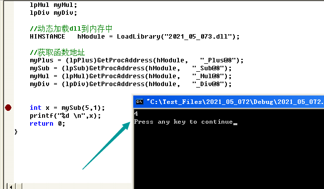

# 库的介绍
库是写好的现有的，成熟的，可以复用的代码。现实中每个程序都要依赖很多基础的底层库，不可能每个人的代码都从零开始，因此库的存在意义非同寻常。
本质上来说库是一种可执行代码的二进制形式，可以被操作系统载入内存执行。
库有两种：静态库（.a、.lib）和动态库（.so、.dll）
windows 上对应的是.lib .dll
linux 上对应的是.a .so
超详细内容:https://www.cnblogs.com/king-lps/p/7757919.html
# 代码复用的实现
静态链接库
动态链接库
使用.def 导出
# 静态链接库
例子为滴水逆向教程中的。
# VC6.0 创建静态链接库
- 在 VC6 中创建项目：Win32 Static Library

- 在项目中创建两个文件：xxx.h 和 xxx.cpp
xxx.h 文件：
#if !defined(AFX_TEST_H__DB32E837_3E66_4BE7_B873_C079BC621AF0__INCLUDED_) | |
#define AFX_TEST_H__DB32E837_3E66_4BE7_B873_C079BC621AF0__INCLUDED_ | |
#if _MSC_VER > 1000 | |
#pragma once | |
#endif // _MSC_VER > 1000 | |
int Plus(int x, int y); | |
int Sub(int x, int y); | |
int Mul(int x, int y); | |
int Div(int x, int y); | |
#endif |
xxx.cpp 文件：
int Plus(int x, int y) | |
{ | |
return x+y; | |
} | |
int Sub(int x, int y) | |
{ | |
return x-y; | |
} | |
int Mul(int x, int y) | |
{ | |
return x*y; | |
} | |
int Div(int x, int y) | |
{ | |
return x/y; | |
} |
- 编译
# 使用静态链接库
方式一：
将 xxx.h 和 xxx.lib 复制到要使用的项目中

在需要使用的文件中包含：#include "xxx.h"
在需要使用的文件中包含：#pragma comment (lib, "xxx.lib")

方式二：
将 xxx.h 和 xxx.lib 复制到要使用的项目中
在需要使用的文件中包含：#include "xxx.h"
需要让编译器自己 LINK"lib 库"



# 动态链接库
# 创建 DLL
在 VC6 中创建项目：win32 Dynamic-link library
源文件中：
int __stdcall Plus(int x,int y) | |
{ | |
return x+y; | |
} | |
int __stdcall Sub(int x,int y) | |
{ | |
return x-y; | |
} | |
int __stdcall Mul(int x,int y) | |
{ | |
return x*y; | |
} | |
int __stdcall Div(int x,int y) | |
{ | |
return x/y; | |
} |
- 头文件中
extern "C" _declspec(dllexport) __stdcall int Plus (int x,int y); | |
extern "C" _declspec(dllexport) __stdcall int Sub (int x,int y); | |
extern "C" _declspec(dllexport) __stdcall int Mul (int x,int y); | |
extern "C" _declspec(dllexport) __stdcall int Div (int x,int y); |
- 编译
说明:
1、extern 表示这是个全局函数，可以供各个其他的函数调用；
2、"C" 按照 C 语言的方式进行编译、链接； __declspec (dllexport) 告诉编译器此函数为导出函数；__stdcall 是为了保持导出与导入时函数调用规则一致，要么都加，要么都不加。
# 使用 DLL
# 方式一：隐式连接
步骤 1：将 *.dll *.lib 放到工程目录下面

步骤 2：将 #pragma comment (lib,"DLL 名.lib") 添加到调用文件中
步骤 3：加入函数的声明
extern "C" __declspec(dllimport) __stdcall int Plus (int x,int y); | |
extern "C" __declspec(dllimport) __stdcall int Sub (int x,int y); | |
extern "C" __declspec(dllimport) __stdcall int Mul (int x,int y); | |
extern "C" __declspec(dllimport) __stdcall int Div (int x,int y); |
说明：
__declspec (dllimport) 告诉编译器此函数为导入函数；
结果：

# 方式二：显示连接
步骤 1： // 定义函数指针
typedef int (__stdcall *lpPlus)(int,int); | |
typedef int (__stdcall *lpSub)(int,int); | |
typedef int (__stdcall *lpMul)(int,int); | |
typedef int (__stdcall *lpDiv)(int,int); |
步骤 2： // 声明函数指针变量
lpPlus myPlus; | |
lpSub mySub; | |
lpMul myMul; | |
lpDiv myDiv; |
步骤 3： // // 动态加载 dll 到内存中
HINSTANCE hModule = LoadLibrary("Dll名.dll"); |
步骤 4： // 获取函数地址
myPlus = (lpPlus)GetProcAddress(hModule, "函数名"); | |
mySub = (lpSub)GetProcAddress(hModule, "函数名"); | |
myMul = (lpMul)GetProcAddress(hModule, "函数名"); | |
myDiv = (lpDiv)GetProcAddress(hModule, "函数名"); |
步骤 5： // 调用函数
int a = myPlus(10,2); | |
int b = mySub(10,2); | |
int c = myMul(10,2); | |
int d = myDiv(10,2); |
💔注意
关于在 DLL 中的函数名
其实取决于函数名是否更改的关键在于 两个函数转变字__stdcall 和__cdecl
如果你用了__stdcall 那 dll 中的函数就会在函数名前加 "-", 函数名后加 "@x"
而__cdecl 则不会将函数改名，因为__cdecl 是函数缺省的状态，所以只要将
__stdcall 在你的函数声明中去掉就可以了，更详细的区别可以参阅 msdn 中
的内容。
结果：

# 句柄
Handle 是代表系统的内核对象，如文件句柄，线程句柄，进程句柄。
HMODULE 是代表应用程序载入的模块
HINSTANCE 在 win32 下与 HMODULE 是相同的东西 Win16 遗留
HWND 是窗口句柄
其实就是一个无符号整型 (四个字节),Windows 之所以这样设计有 2 个目的：
可读性更好
避免在无意中进行运算